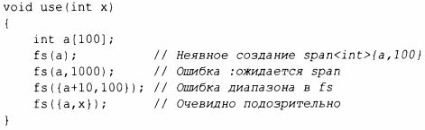

⇐13.2.2 move() и forward() 13.4 Специализированные контейнеры⇒
Традиционно ошибки выхода за границы диапазона были основным источником серьезных ошибок в программах на С и С++. Использование контейнеров (глава 11, "Контейнеры"), алгоритмов (глава 12, "Алгоритмы") и цикла for по диапазону значительно уменьшили эту проблему, но можно сделать больше. Основным источником ошибок выхода за границы диапазона является то, что люди передают указатели (обычные или интеллектуальные), а затем, чтобы узнать количество элементов, на которые они указывают, полагаются на соглашение. Наилучший совет для кода вне дескрипторов ресурсов состоит в том, чтобы предположить, что указатель указывает не более чем на один объект [CG:F.22], но без соответствующей поддержки этот совет мало что дает. Нам может помочь string view (§9.3) из стандартной библиотеки, но это представление доступно только для чтения и только для символов. Большинству программистов нужно большее.
В работе [61] предлагаются некоторые рекомендации и небольшая библиотека для их поддержки [23], включая тип span для ссылки на диапазон элементов. Этот span предложен в стандарт, но пока что это просто код, который вы можете загрузить, если он вам нужен.
string_span представляет собой пару (указатель, длина), обозначающую последовательность элементов.
span предоставляет доступ к непрерывной последовательности элементов. Элементы могут храниться разными способами, в том числе в векторах и встроенных массивах. Как и указатель, span не владеет символами, на которые указывает. В этом он похож на string_view (§9.3) и на пару итераторов STL (§ 12.3).
Рассмотрим общий стиль интерфейса:
Мы предполагаем, что р указывает на n целых чисел. К сожалению, это предположение - просто соглашение, поэтому мы не можем использовать его для написания цикла for для диапазона, а компилятор не может реализовать дешевую и эффективную проверку выхода за границы диапазона. Кроме того, наше предположение может попросту быть неверным:
Можно сделать лучше, если использовать span:
Использовать fs можно, например, так:
То есть распространенный случай создания span непосредственно из массива теперь безопасен (компилятор сам вычисляет количество элементов) и прост для записи. В других случаях вероятность ошибок снижается, потому что программист должен явно составить диапазон.
Распространенный случай, когда диапазон передается от функции к функции, оказывается проще, чем для интерфейсов (указатель,счетчик), и, очевидно, не требует дополнительной проверки:
При использовании для индексации (например, r [i]) выполняется проверка выхода за границы диапазона, и в случае ошибки генерируется исключение gsl::fail_fast. Проверка выхода за границы диапазона может быть подавлена для кода, критичного к производительности. Когда span станет стандартом, я ожидаю, что std::span будет использовать контракты (20] для управления ответами на нарушения границ диапазона.
Обратите внимание, что для цикла необходима только одна проверка диапазона. Таким образом, для распространенного случая, когда тело функции, использующей span, представляет собой цикл по диапазону span, эта проверка оказывается практически бесплатной.
Диапазон символов поддерживается непосредственно и называется gsl::string_span.